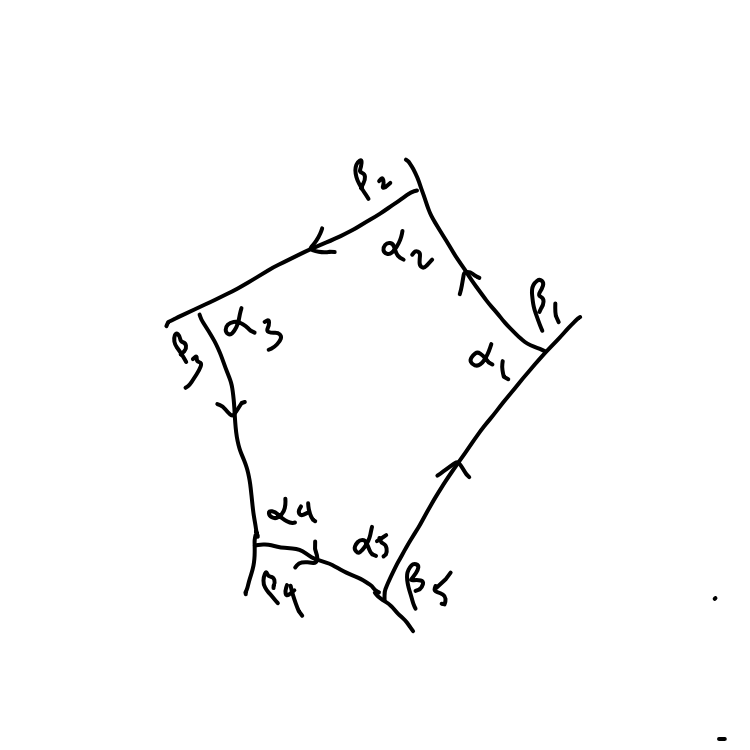

These notes are set so that you get to prove the main results
by solving smaller problems that when put together give the big result.
The answers to the problems are in the videos.
You will get the most out of these notes if you do (or try) the problems
before looking at the videos.

Here is the problem we wish to understand. Let \( M\) be a surface in
\(\mathbb R^3\) and let \(p\) and \(q\) be points of \(M\). Then we
want a description of the curve in \(M\) of shortest length.
That is for all curves \(\mathbf c\colon [a,b]\to M\) with
\(\mathbf c(a) = p\) and \(\mathbf c(b) = q\) we want the one
which is the shortest. (The more rigorously included among will
point out that we should first prove that such a shortest curve
exists. I am not going to worry about that, but am going to assume
it exists and describe its properties.)
Before starting on this we review some vector calculus that will
be used.
Problem 1:
Let \( \pmb \beta \colon [a,b] \to \mathbb R^3\) be a \( C^1\) curve.
Than at points where \(\pmb \beta(t)\ne \mathbf 0\) show
\[
\frac d{dt} \| \pmb\beta (t) \| =\left( \frac{\pmb\beta(t)}{\|\pmb\beta(t)\|}\right)
\cdot \pmb \beta'(t)=\widehat{\pmb\beta}(t)\cdot \pmb\beta'(t).
\]
where \( \widehat{\pmb\beta}(t)\) is the unit vector in the direction
of \(\pmb \beta(t)\).
Solution: